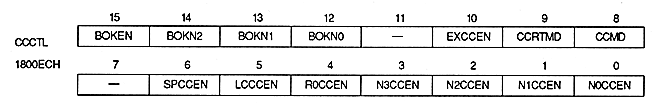

Bokeh operation enable bit : Gradation enable bit (BOKEN), bit 15
| BOKEN | Process |
| 0 | Do not use the blur calculation function |
| 1 | Use the blur calculation function |
∙ When this bit is set to 1, the extended color calculation function cannot be used.
The blur calculation function can be used only when the TV screen mode is normal mode and the color RAM mode is mode 0.
| BOKN2 | BOKN1 | BOKN0 | Calculation function use screen |
| 0 | 0 | 0 | Sprite |
| 0 | 0 | 1 | RBG0 |
| 0 | 1 | 0 | NBG0 or RBG1 |
| 0 | 1 | 1 | Setting prohibited |
| 1 | 0 | 0 | NBG1 or EXBG |
| 1 | 0 | 1 | NBG2 |
| 1 | 1 | 0 | NBG3 |
| 1 | 1 | 1 | Setting prohibited |